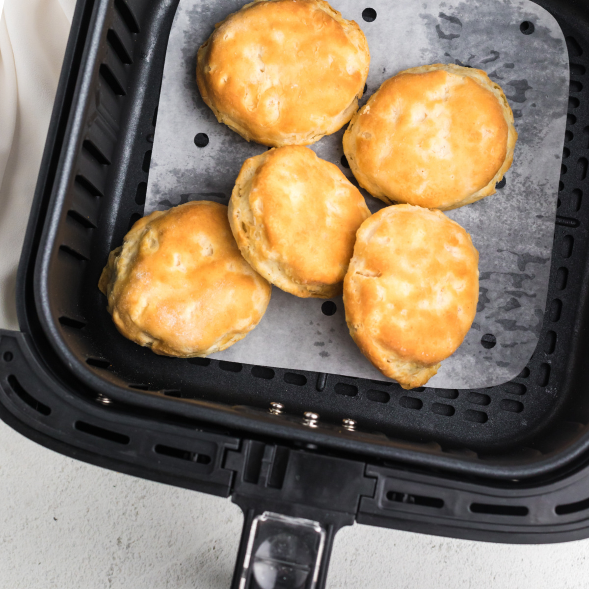

Air-Fryer Drop Biscuits

Southern inspired simple air fryed biscuits
This recipe puts your air-fryer to good use.
Inspired from the American South, these biscuits use common pantry ingredients, to create a quick fix for your cravings.
Ingredients
- 2 cups sifted Bread or AP Flour (makes 4 biscuits)
- 1 teaspoon Baking Powder
- 1 teaspoon salt
- 1/2 teaspoon sugar (for browning)
- 80g extremely cold Unsalted Butter
- 3/4 cup Buttermilk or any Milk
- *2 tablespoons lemon juice if using Milk*
Step-by-Step
Prep work
- Mix dry ingredients together (Flour, Baking Powder, Salt, Sugar) Optionally place in freezer
- Use a large cheese grater to grate the butter or chop butter into dime-sized pieces
- Mix butter with dry ingredient and gently coat and squish the butter until all are covered with flour
- Add Buttermilk or Milk/Lemon mixture (see instructions below) with the Flour Butter mixture
- *Add 2 tablespoons of Lemon Juice to Milk and set aside for 5 minutes*
- Gently mix being careful not to overwork the dough
- Dump mixture to working surface and gently flatten it out to about 1/2-3/4 inch thickness
- Fold one side on top of the other, flatten and repeat 4-5 times
- *There will be plenty loose flour in the beginning, just add the loose flour on top before folding*
- After last fold, only flatten dough to about 1-1.5 inches thick
- Use a cookie cutter (or cut) the dough in your preferred shape
- Place dough into a preheated Air-Fryer and cook at 160 for 8-12 minutes
- Serve with or gravy like a real Southerner!